Hello, I'm
Project Engineer | IT Infrastructure
Project Engineer with ~4 years of enterprise IT experience spanning Tier-1/Tier-2 Endpoint Operations, Vulnerability Remediation, and Systems Administration across banking engagements at Wipro.
About Me
Project Engineer with ~4 years of enterprise IT experience spanning Endpoint Support, Vulnerability Remediation, and Systems Administration in banking environments. Currently supporting ~400 users and 400–500 endpoints for an ICICI Bank engagement at Wipro, maintaining 98% SLA compliance while resolving ~10 tickets/day across Windows 10/11, access control, Microsoft Intune, Zscaler, and hardware provisioning.
Prior experience coordinating server vulnerability remediation across ~100 Windows servers (IDFC Bank engagement), contributing to the closure of 5+ lakh vulnerability findings within a one-month remediation cycle using structured analytics, PivotTables, and downtime scheduling.
Hands-on exposure to Windows Server administration (AD DS, DNS, DHCP, GPOs), Microsoft Azure cloud infrastructure (VM provisioning, VNets, App Service), and PowerShell script automation.
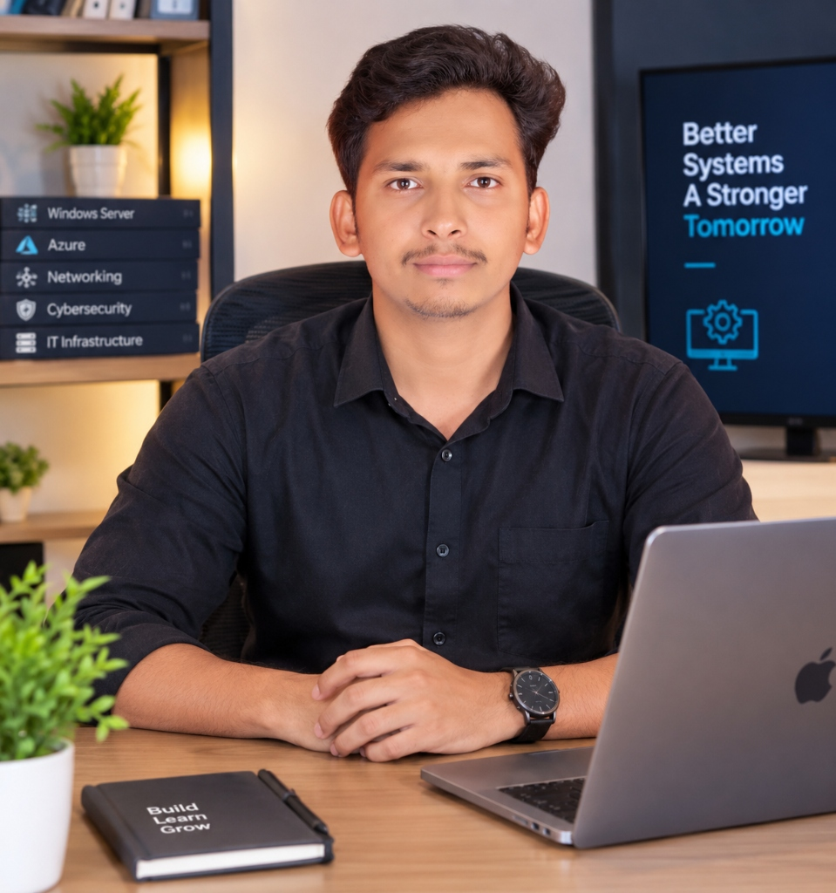
Supporting Windows 10/11, Microsoft Intune, Zscaler, Active Directory coordination, and Zero-Touch installation for enterprise endpoints.
Experience structuring vulnerability assessment datasets, tracking remediation metrics across ~100 servers, and scheduling downtime.
Practical implementation of AD DS, Domain Controllers, DNS, DHCP, Group Policy Objects, Hyper-V, and Azure VM/Networking infrastructure.
Core Competencies
Professional Experience
Wipro Limited — ICICI Bank Project
Wipro Limited — IDFC Bank Project
FLAGSHIP ENGINEERING PROJECT
Personal Engineering Project / Enterprise-style Endpoint Management Platform
Designed and engineered a scalable full-stack endpoint management and monitoring platform built to deliver real-time system visibility, automated risk assessment, health telemetry, and real-time command orchestration across enterprise Windows endpoints.
FLAGSHIP INFRASTRUCTURE CAPSTONE
Completed Capstone / Hands-on Infrastructure Lab with Documented Evidence
Designed and administered an end-to-end on-premises Windows Server 2022 environment for Weipro Logistics Pvt. Ltd., a supply-chain organization branch with 120 users across six departments (Admin, HR, Finance, Operations, Sales, IT). Built centralized Active Directory identity (wewiprologistics.local), DNS, DHCP, RAID storage, shared folder security, print services, and disaster recovery backup.
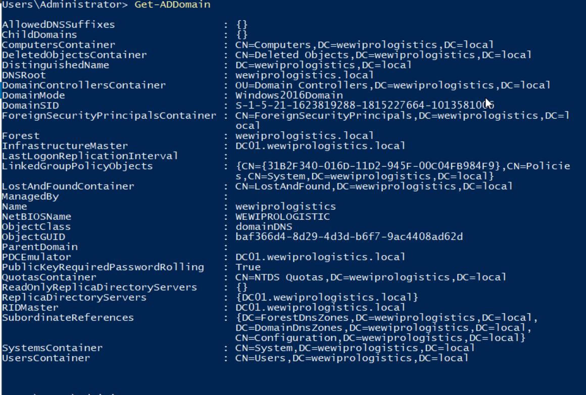
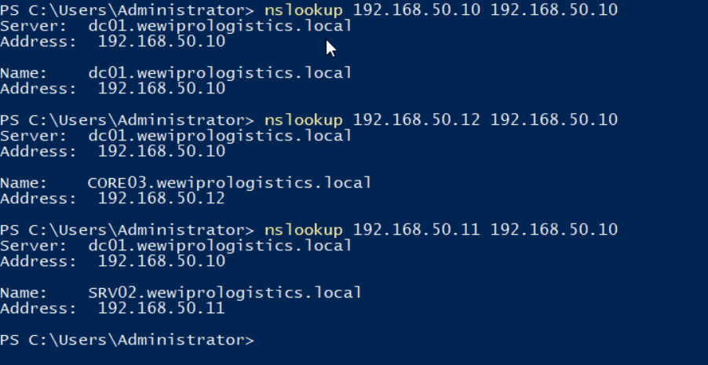
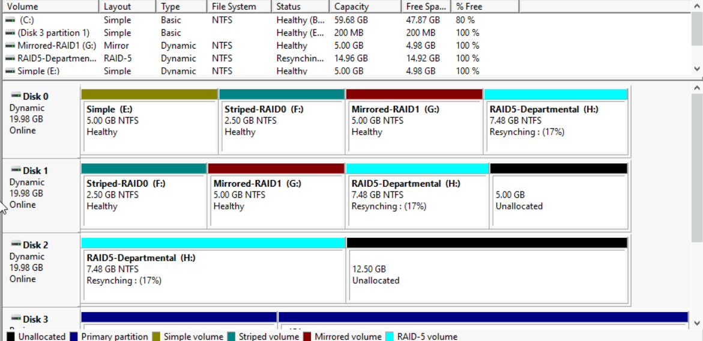
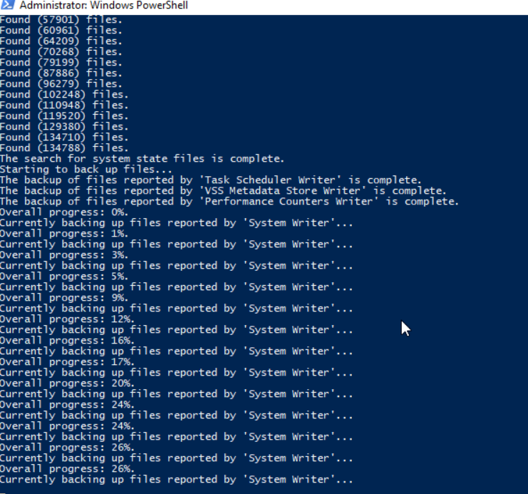
HANDS-ON CLOUD LABS
Completed Capstone / Hands-on Infrastructure Lab covering Active Directory DS, Domain Controllers, DNS, DHCP, OUs, Group Policies, NTFS File Shares, RAID storage, and System State disaster recovery.
Hands-on Training / Infrastructure Labs targeting core cloud provisioning concepts, resource governance, virtual networking, and containerized application deployment.
Verification & Mapping
Background & Credentials
Professional certifications, internal technical assessments, and verified learning credentials.
Career Focus
Leveraging ~4 years of enterprise IT operations background to transition into specialized systems engineering and cloud roles:
Location: Patna based. Open to relocation PAN India (Noida, Pune, Kolkata, Bengaluru, Hyderabad).
Get in Touch
I am always open to discussing new opportunities, infrastructure projects, or connecting with professionals in the Endpoint Management, Windows Server, and Azure space.
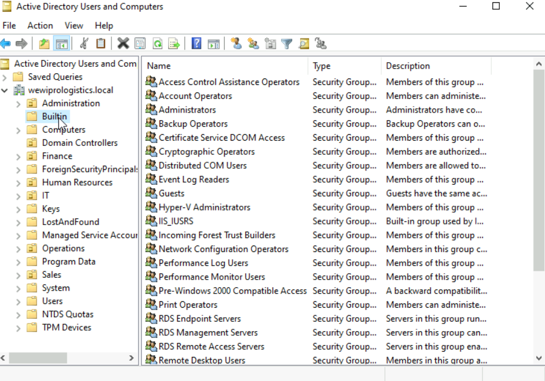
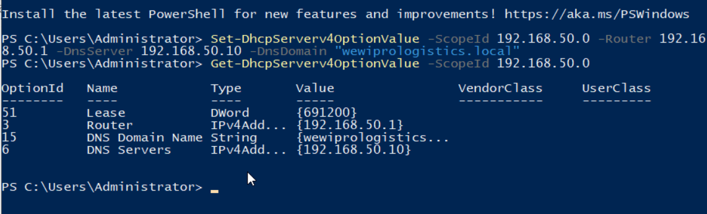
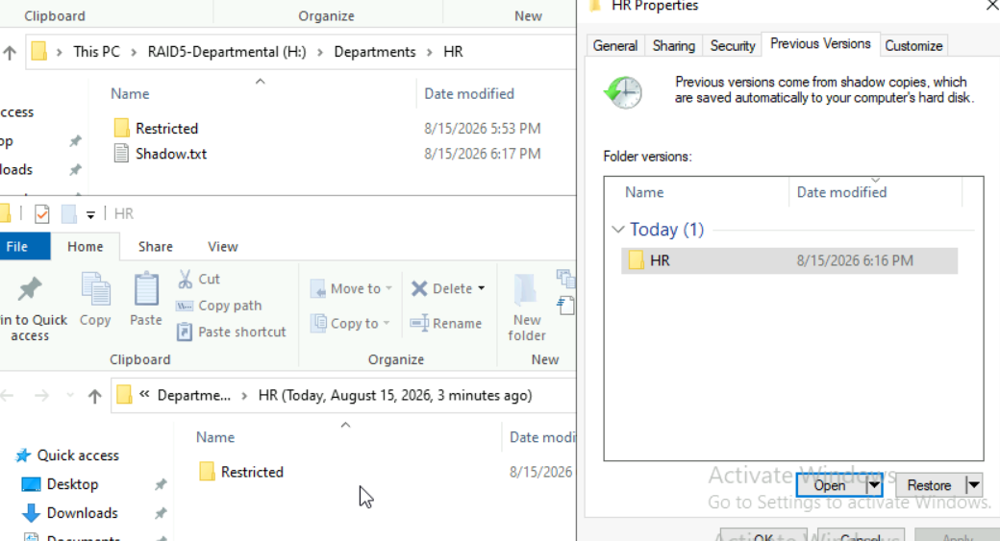
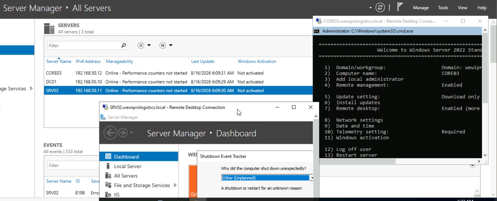
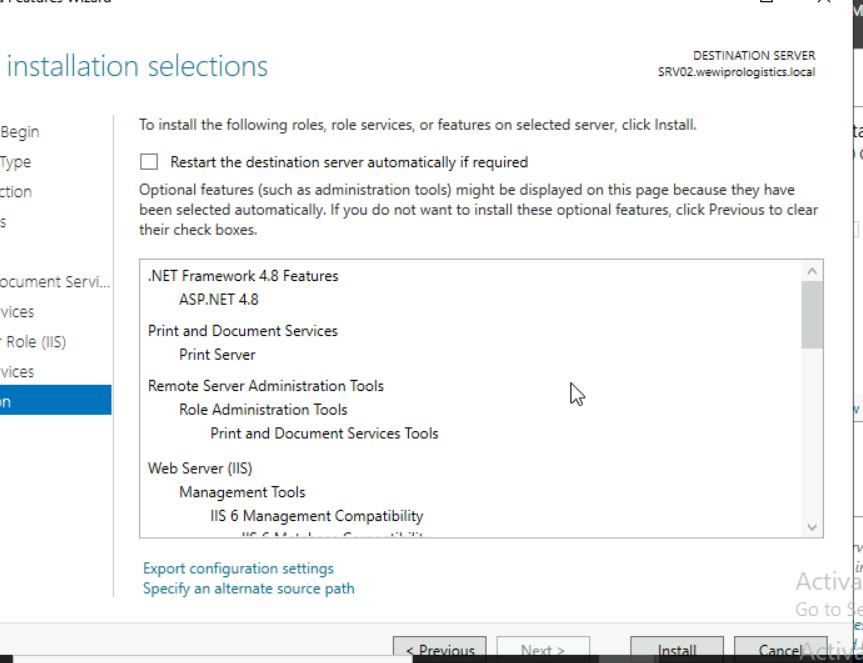
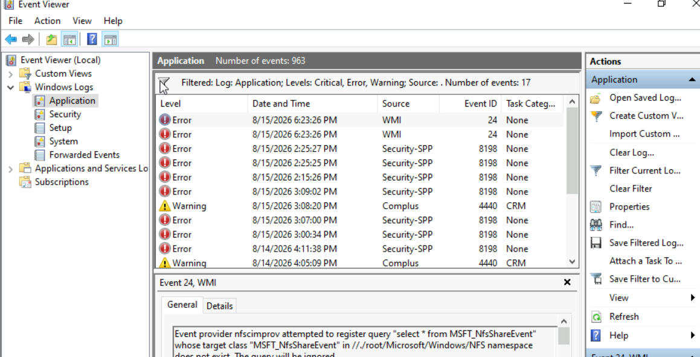